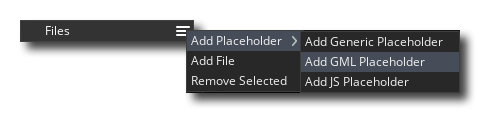

Ein Erweiterungspaket kann verwendet werden, um der GameMaker Language (GML) eine Reihe zusätzlicher Funktionen und Konstanten hinzuzufügen oder Spielinhalte oder sogar ganze Projekte einfach zwischen Personen zu übertragen. Wenn die Erweiterung zusätzliche Funktionalität hinzufügen soll, können die verwendeten Funktionen Ihr Spiel mit externen SDKs oder Quellcode in anderen Sprachen (z. B. Java für Android ) sowie mit nativem GML verknüpfen. 
Normalerweise werden Erweiterungen von Drittanbietern vom GameMaker Marketplace kommen und diejenigen, die Sie abonniert haben, werden dann im Marktplatz-Bibliotheksfenster aufgelistet und können von dort aus installiert werden, oder indem Sie mit der rechten Maustaste klicken  Klicken Sie im Ressourcenordner " Extensions" auf Existing From My Library hinzufügen. Wenn Sie Ihr Erweiterungspaket nicht vom Marketplace erhalten haben, können Sie es zu einem Projekt hinzufügen, indem Sie erneut mit der rechten Maustaste klicken
Klicken Sie im Ressourcenordner " Extensions" auf Existing From My Library hinzufügen. Wenn Sie Ihr Erweiterungspaket nicht vom Marketplace erhalten haben, können Sie es zu einem Projekt hinzufügen, indem Sie erneut mit der rechten Maustaste klicken  den Ordner Erweiterungen in der Ressourcenstruktur und wählen Sie Add Existing.
den Ordner Erweiterungen in der Ressourcenstruktur und wählen Sie Add Existing.
Wenn Sie eine haben *.GMEZ GameMaker Studio Sie mit einer früheren Version von GameMaker Studio, können Sie diese hinzufügen, indem Sie die rechte Maustaste drücken  Menüoption Datei importieren.
Menüoption Datei importieren.
Weitere Informationen zum Verwenden und Erstellen von Erweiterungspaketen finden Sie in den folgenden Abschnitten:
Nachdem Sie eine Erweiterung hinzugefügt haben, können Sie sie in Ihren Projekten verwenden. Sie sollten jedoch sicherstellen, dass die Erweiterungseigenschaften mit der Zielplattform übereinstimmen, und die Exportziele für die Erweiterungsdateien basierend auf dem Folgenden bearbeiten:
- Alle Ziele: GML-Erweiterungen. Dies sind Erweiterungen, die mit der GameMaker Language (GML) erstellt wurden und mit allen Zielplattformen kompatibel sind.
- Windows (Standard, UWP, XBoxOne): Sie können Windows DLL-Dateien (Dynamic Link Libraries) verwenden.
- Mac OS: Das Mac OS-Ziel kann die Standard-DyLib-Dateien für Erweiterungen verwenden.
- Ubuntu (Linux): Für das Ubuntu-Ziel müssen Sie sicherstellen, dass Ihre Erweiterung SO-Dateien verwendet.
- Html5: Diese Plattformen können JavaScript-Erweiterungen verwenden.
- Android: Für diese Plattform muss eine Erweiterung in Java oder einem Android Framework SDK geschrieben werden.
- iOS: Erweiterungen für diese Plattform sind in Objective C geschrieben und erfordern eine *.mm- und eine *.h-Datei oder bei Verwendung von Frameworks eine vorkompilierte *.a-native Datei.
- PlayStation: Für PlayStation 3 oder 4 sollten deine Erweiterungen PRX-Dateien sein, wobei jedes Ziel einen anderen PRX benötigt, um der Spezifikation des Ziels zu entsprechen (entweder PS3 oder PS4). Wenn Sie an einer PSVita arbeiten, sollte die Erweiterung stattdessen SUPRX sein.
Um die Zielplattform für eine bestimmte Erweiterungsdatei oder einen Platzhalter zu ändern, müssen Sie zunächst die Eigenschaften der Erweiterung öffnen (Doppelklick)
die Erweiterung ich den Ressourcenbaum oder verwenden
und wählen Sie Eigenschaften öffnen ), und wählen Sie dann in den Erweiterungseigenschaften einmal die Ressourcendatei von rechts aus, die Sie bearbeiten möchten:
HINWEIS: Wenn Sie auf das macOS- oder Ubuntu-Ziel exportieren, können Sie die Option "Dekomprimieren als ZIP-Datei" aktivieren, um Dateiberechtigungen für die Erweiterung beizubehalten.
Sobald Sie Ihre Erweiterung installiert haben, können Sie die Funktionen und Konstanten für sie genauso verwenden wie die eingebauten Funktionen und Konstanten in der GameMaker Sprache. Wenn Ihr Spiel plattformübergreifend ist (z. B. für Windows- und Android Ziele), sollten Sie vor dem Aufrufen erweiterungsspezifischer Funktionen eine Betriebssystemprüfung durchführen, um Probleme zu vermeiden. Beispiel:switch(os_type)
{
case os_android:
call_android_extension_function(x, y, z);
break;
case os_windows:
call_windows_extension_function(x, y, z);
break;
}Beachten Sie, dass Ihre Erweiterungen für verschiedene Plattformen Funktionsnamen gemeinsam nutzen können. Wenn Sie also eine Erweiterung mit unterschiedlichen Dateien haben, um beispielsweise eine Nachricht für Windows und Android, können beide Erweiterungsdateien denselben Funktionsnamen verwenden beide setzen nur auf ihre jeweiligen Plattformen exportieren.
Um eine Erweiterung zu erstellen, müssen Sie zuerst mit der rechten Maustaste klicken
Um der neuen Erweiterung eine Datei hinzuzufügen, müssen Sie auf das Menüsymbol klicken
und wählen Sie entweder eine Platzhalterdatei oder die tatsächliche Datei aus, die für die Zielplattform erforderlich ist: 
Ein "generischer" Platzhalter ist eine Datei, die von jedem Typ sein kann, mit Ausnahme derer, die von den spezifischen Plattformen benötigt werden (also zum Beispiel keine DLL- oder SO-Dateien), und sie wird nur als "Linker" -Datei verwendet Satz von Funktionen oder Konstanten mit der angegebenen Erweiterung (in der Regel nur für die Verwendung mit iOS- und Android Erweiterungen, die in den folgenden Abschnitten für diese Ziele erläutert werden). Sie können auch "GML" - und "JS" -Platzhalterdateien für eine spezifischere Verwendung hinzufügen.
Normalerweise müssen Sie keine Platzhalter verwenden, wenn Sie nicht für iOS und Android erstellen. Daher wählen Sie die Option Dateien hinzufügen, um abhängig von der Zielplattform, für die sie bestimmt sind, eine der folgenden Dateien hinzuzufügen:
- .gml: Dies ist eine Datei, die nur mit der GameMaker Sprache erstellt wurde und mit allen Plattformen kompatibel ist.
- .js: Dies ist ein JavaScript-Erweiterungsformat und ist nur mit den JS-Zielmodulen (HTML5) kompatibel.
- .dll: Dies ist ein dynamisches Link-Bibliothekserweiterungsformat und ist nur mit den Windows-, UWP- und Xbox One-Zielen kompatibel (jedes Ziel benötigt eine andere *.dll-Datei, die mit seinen Spezifikationen kompatibel ist).
- .dylib: Dies ist das Mac-Äquivalent einer DLL und ist nur mit Mac-Ziel (nicht iOS) kompatibel.
- .so: Dies ist das Linux-Äquivalent einer DLL und ist nur mit dem Ubuntu (Linux) -Ziel kompatibel.
- .prx: Dies ist ein Dateiformat zum Hinzufügen der Funktionalität PS4-Ziel (jedes Ziel benötigt eine andere *.prx-Datei, die mit seinen Spezifikationen kompatibel ist).
Sie werden feststellen, dass es für Android und iOS keinen Dateityp gibt, da sie etwas anders aufgebaut sind. Weiter unten finden Sie Erklärungen, wie Sie sie einrichten, aber zuerst schauen wir uns eine allgemeine GML-Erweiterung für eine der Zielplattformen an, da der Prozess für alle dieselbe ist.
Zu Beginn müssen Sie die Datei erstellen, die verwendet werden soll. Für eine GML-Erweiterung wäre dies eine Textdatei (gespeichert mit der .gml Erweiterung) und wäre so formatiert:
#define c_alice_blue
return make_color_rgb(240,248,255);
#define instance_create_colour
var i = instance_create_layer(argument0, argument1, argument2);
with (i)
{
image_blend = argument3;
}
return i;Wie Sie sehen können, beginnen wir jeden Abschnitt mit einem #define Aufruf, der im obigen Beispiel verwendet wird, um zwei Funktionen zu definieren. Sie müssen keine Argumentfelder für die Funktionen angeben, da dies später hinzugefügt wird. Verwenden Sie einfach das Define und dann den Namen der Funktion und fahren Sie fort und fügen Sie die passende GML hinzu. Wenn Sie eine DLL- oder JS-Erweiterung schreiben, ist der Prozess ähnlich, jedoch in der richtigen Sprache für das Dateiformat der Erweiterung.
Sobald Sie das getan haben, müssen Sie die Datei zu der Erweiterung hinzufügen (oben erklärt), die ein neues Fenster zu den Extensions-Eigenschaften für die Dateieigenschaften verketten wird:
Hier würden Sie die Zielplattform für die Erweiterung auswählen (für GM würden Sie alle auswählen), sowie die Erweiterungsdatei umbenennen und einige weitere Details festlegen, die wir gleich behandeln werden. Zuallererst möchten wir jedoch unsere Konstanten und Funktionen hinzufügen, so dass der Benutzer die Erweiterung innerhalb ihres Projektcodes aufrufen kann. Dafür müssen Sie auf die Schaltfläche für das Erweiterungsmenü klicken
Wenn Sie "Funktion hinzufügen" auswählen, können Sie der Erweiterung eine Funktion hinzufügen, die dann in GameMaker Studio 2 genauso aufgerufen werden kann wie alle anderen eingebauten Funktionen. Das folgende Fenster öffnet sich, in dem Sie die Funktion definieren können:
Im obigen Bild haben wir den Funktionseditor mit den Details für die Funktion gefüllt instance_create_colour das haben wir in unserem GML-Erweiterungsskript definiert (der Funktionseditor dient nicht nur zur Definition von GML-Funktionen und ist für jeden anderen Erweiterungstyp derselbe). Sie können sehen, dass wir der Funktion einen Namen gegeben haben, wie Sie ihn bei der Verwendung der Funktion in Ihrem Projekt verwenden würden, und dieser Name muss nicht mit dem in der Erweiterung verwendeten übereinstimmen - Sie können ihn beliebig einstellen und Verwenden Sie dann die Option Externer Name, um sie mit dem tatsächlichen Namen zu verknüpfen, der in der Erweiterung definiert ist. Darunter haben Sie einen Abschnitt zum Definieren des Hilfstextes, welcher der Text ist, der im Popup-Fenster "Code Complete" verwendet wird und den Hilfstext am unteren Rand des Code-Editors.
Als nächstes können Sie den Rückgabetyp definieren, der ein Double- Wert (Gleitkommawert in reellen Zahlen) oder eine Zeichenkette sein kann - wenn von der externen Funktion nichts zurückgegeben wird - ist das egal - und darunter definieren Sie die Argumente, die die Funktion haben soll nehmen.
Schließlich fügen Sie die Argumente (falls vorhanden) hinzu, die die Funktion annehmen kann. Argumente können doppelte oder Zeichenfolgen sein und Sie können sie hinzufügen, indem Sie auf die Schaltfläche Hinzufügen klicken
und entferne sie, indem du auf den Entfernen-Button klickst
. Beachten Sie, dass wenn Sie ein Windows erstellen dll Datei und es hat mehr als vier Argumente, alle Argumente müssen vom selben Typ sein.
Sobald Sie alles getan haben, ist die Funktion bereit für die Verwendung in einem Projekt und wird automatisch vervollständigt und farbcodiert angezeigt. Definierte Funktionen können auch als Init Functions oder Final Functions eingestellt werden, dh sie werden automatisch beim Start des Spiels (Init) und beim Ende des Spiels (Final) aufgerufen.
WICHTIG! Alle Plattformen unterstützen den Init-Funktionsaufruf, aber nicht alle Plattformen führen den abschließenden Funktionsaufruf durch. Dies ist darauf zurückzuführen, dass bestimmte Plattformen die App einfach schließen, ohne dass diese Funktion aufgerufen oder aufgerufen wird. Die betroffenen Plattformen sind: iOS, Android, HTML5, PlayStation und Xbox One.
Die andere Option, die Sie haben, ist ein Makro zu erstellen. Ein Makro kann ein konstanter Wert oder ein einzelnes Code-Snippet sein (weitere Informationen zu Makros finden Sie hier ). Zum Beispiel könnten wir die definierte Funktion aus unserer Beispiel-GML-Erweiterung für die Farbe entfernen c_alice_blue und mache stattdessen ein Makro:Der Editor hier ist ziemlich selbsterklärend - Sie geben den Namen des Makros / Konstante und den Wert, oder eine kurze Zeile des Codes. Wenn das Makro eine Codezeile ist, wird es bei jedem Aufruf des Makros ausgewertet.
Wenn Sie mit mehreren Zielplattformen arbeiten, sollten Sie beachten, dass Sie eine einzige Erweiterung mit nur einem Satz von Funktionen / Makros erstellen können, die auf allen Plattformen funktionieren. Dies wird erreicht, indem nur eine der Link-Bibliotheken zu Ihrem Spiel als Erweiterung hinzugefügt wird und die anderen in die Liste der Proxy-Dateien im Fenster Extension Properties eingetragen werden. Angenommen, Sie haben eine Windows-Erweiterung mit der DLL "Haggis.dll". Sie würden diese DLL einfach als Mac-DyLib replizieren, sie als "libHaggis.dylib" benennen und sicherstellen, dass die internen Funktionsnamen mit denen der ursprünglichen Windows-DLL übereinstimmen. Diese DyLib würde dann zu den Proxy-Dateien hinzugefügt und zum Exportieren festgelegt, wenn das Spiel auf dem Mac-Ziel ausgeführt wird, und GameMaker Studio 2 wird es automatisch verwenden, wenn die Erweiterungsfunktionen aufgerufen werden.
Um eine Proxy-Datei hinzuzufügen, klicken Sie einfach auf
Klicken Sie im Fenster Erweiterungseigenschaften für die Erweiterung auf die Schaltfläche und navigieren Sie zum Speicherort der Datei. Sobald es hinzugefügt wird, müssen Sie möglicherweise das Erweiterungsziel auf das entsprechende Modul ändern. Wenn Sie das Spiel das nächste Mal ausführen, wird es als Proxy für diese Plattform bereitgestellt. Sie können auch Proxy-Dateien entfernen, indem Sie auf klicken
Taste, die bei jedem Drücken die letzte in der Liste entfernt.
Sobald Sie Ihre Proxy-Dateien hinzugefügt haben, werden sie in der. Gespeichert YYP deines Spiels, im Extensions-Ordner (du kannst sie leicht finden, indem du mit der rechten Maustaste klickst
Es ist sehr wichtig, dass Ihre Proxy-Dateien den unten aufgeführten Namenskonventionen folgen, da GameMaker Studio 2 diese Namen analysiert und das Zielmodul für die Datei entsprechend ihrer Erweiterung und ihres Namens zuweist und automatisch die Dateien für Sie verknüpft. Wenn Sie diesen Konventionen nicht folgen, funktioniert Ihr Spiel möglicherweise nicht zur Laufzeit, da GameMaker Studio 2 nicht in der Lage ist herauszufinden, welche Datei verwendet wird oder ob die Datei nicht korrekt geladen wird.
Die Benennungskonventionen für jede Zielplattform sind nachstehend aufgeführt:
Plattform Namen Windows <Name>.dll. Linux <Name>.so, lib <Name>.so, <Name> _linux.so, lib <Name> _linux.so Mac OS X <Name>.dylib, lib <Name>.dylib HTML5 <Name>.js PS4 <Name>.prx, lib <Name>.prx, <Name> _ps4.prx, lib <Name> _ps4.prx Xbox Eins <Name> _xboxone.dll Mit den obigen Konventionen würden Sie den <Name> -Teil für den Namen der Basisdatei austauschen, für die Sie die Proxy-Dateien hinzufügen.
Um eine Erweiterung für Android zu erstellen, müssen Sie es in zwei Teilen tun. Der erste Teil wäre, die Erweiterung selbst hinzuzufügen, zusammen mit den erforderlichen Dateien usw.... und die zweite besteht darin, die Funktionen und Makros / Konstanten zu erstellen, die die Erweiterung benötigt. Die Funktionen und Konstanten werden mithilfe von Platzhalterdateien hinzugefügt, um sie zu gruppieren. Fügen Sie daher einen Platzhalter hinzu und definieren Sie dann die Funktionen und Makros, wie im obigen Abschnitt erläutert. Um den Rest der Dateien hinzuzufügen, müssen Sie zuerst das Android Kontrollkästchen im Abschnitt Zusätzliche Funktionen des Editors aktivieren:
Hier geben Sie die folgenden Details an:
- ClassName: Ihre Erweiterung kann mehrere Klassen haben, wobei jede Klasse ihre eigenen Funktionen und Konstanten hat. Geben Sie ihr einen Namen, der ihren Zweck widerspiegelt.
- Android Berechtigungen: Hier können Sie zusätzliche Berechtigungen hinzufügen, die für Ihre Erweiterung erforderlich sind. Wie diese Berechtigungen lauten, hängt ausschließlich von der Verwendung der Erweiterung ab. Daher sollten Sie die von Google bereitgestellte Dokumentation für die Android Plattform oder, wenn Sie ein SDK eines Drittanbieters verwenden, die mit dem SDK mitgelieferte Dokumentation lesen. Um eine neue Berechtigung hinzuzufügen, müssen Sie auf klicken
- Abhängigkeiten von Abhängigkeiten in Großbuchstaben: Hier können Sie zusätzlichen Code hinzufügen, der in die Gradle-Build-Abhängigkeiten eingefügt (hinzugefügt) werden muss.
- Inject to Android Manifest.xml Manifest: Hier legen Sie zusätzlichen Code fest, der der Android Manifest XML-Datei hinzugefügt (hinzugefügt) wird, wenn Ihr Spiel zum Testen oder zur endgültigen Veröffentlichung erstellt wird. Überprüfe diese (und deine Berechtigungen) sorgfältig, bevor du irgendwelche Spiele in den Shop überträgst, da falsche Einstellungen dazu führen, dass dein Spiel zur Einreichung fehlschlägt.
- Inject to Android Manifest.xml Anwendung: Hier legen Sie zusätzlichen Code fest, der der Android Manifest XML-Datei unter der Überschrift "Application" hinzugefügt (hinzugefügt) wird, wenn Ihr Spiel zum Testen oder zur endgültigen Veröffentlichung erstellt wird. Überprüfe diese (und deine Berechtigungen) sorgfältig, bevor du irgendwelche Spiele in den Shop überträgst, da falsche Einstellungen dazu führen, dass dein Spiel zur Einreichung fehlschlägt.
- Inject to Android Manifest.xml RunnerActivity: Hier legen Sie zusätzlichen Code fest, der der Android Manifest XML-Datei unter der Überschrift RunnerActivity hinzugefügt (hinzugefügt) wird, wenn Ihr Spiel zum Testen oder zur endgültigen Veröffentlichung erstellt wird. Überprüfe diese (und deine Berechtigungen) sorgfältig, bevor du irgendwelche Spiele in den Shop überträgst, da falsche Einstellungen dazu führen, dass dein Spiel zur Einreichung fehlschlägt.
Sobald Sie dies richtig eingerichtet haben, müssen Sie die erforderlichen Dateien hinzufügen, damit Ihr Erweiterungspaket funktioniert. Um dies zu tun, müssen Sie auf die Schaltflächen am unteren Rand klicken, entweder SDK hinzufügen oder Quelle hinzufügen, und dann zu den Dateien navigieren, die Sie hinzufügen möchten. Hinzugefügte Dateien werden zusammen mit Ihrer Erweiterung im Android Source- Verzeichnis gespeichert. Sie können diesen Standort jederzeit durch Klicken mit der rechten Maustaste öffnen
Weitere Informationen zum Erstellen von Android Erweiterungen finden Sie in der YoYo Games Knowledge Base.
Um eine Erweiterung für iOS zu erstellen, müssen Sie es in zwei Teile tun. Der erste Teil wäre, die Erweiterung selbst hinzuzufügen, zusammen mit den erforderlichen Dateien usw.... und die zweite besteht darin, die Funktionen und Makros / Konstanten zu erstellen, die die Erweiterung benötigt. Die Funktionen und Konstanten werden mithilfe von Platzhalterdateien hinzugefügt, um sie zu gruppieren. Fügen Sie daher einen Platzhalter hinzu und definieren Sie dann die Funktionen und Makros, wie im obigen Abschnitt erläutert. Um den Rest der Dateien hinzuzufügen, müssen Sie zunächst das Kontrollkästchen " iOS " im Abschnitt " Zusätzliche Funktionen " des Editors aktivieren:
Hier geben Sie die folgenden Details an:
- Linker-Flags / Compiler-Flags: Einige Frameworks und SDKs von Drittanbietern erfordern das Hinzufügen zusätzlicher Linker-Flags und Compiler-Flags, die hier angegeben werden können (weitere Informationen finden Sie in der Dokumentation zum betreffenden SDK oder Framework).
- ClassName: Ihre Erweiterung kann mehrere Klassen haben, wobei jede Klasse ihre eigenen Funktionen und Konstanten hat. Geben Sie ihr einen Namen, der ihren Zweck widerspiegelt
- System-Frameworks: Hier können Sie beliebige iOS-System-Frameworks zu Ihrer Erweiterung hinzufügen. Diese werden hinzugefügt, indem Sie auf klicken
- Inject.plist: Hier können Sie einen beliebigen Code hinzufügen, der in die info.plist Datei.
- Frameworks und Bundles von Drittanbietern: In diesem Abschnitt werden Frameworks und SDK-Pakete von Drittanbietern hinzugefügt. Wie bei Systemrahmen funktioniert das Klicken auf
Wenn Ihrer Erweiterung Systemframeworks oder Frameworks von Drittanbietern hinzugefügt wurden, werden diese nun im Fenster mit den Erweiterungseigenschaften aufgelistet, wobei jedes ein Kontrollkästchen neben ihm enthält. Wenn Sie das Kontrollkästchen aktivieren, aktivieren Sie eine schwache Verknüpfung, was nützlich ist, wenn Sie ein beliebiges Symbol aus der enthaltenen Bibliothek mit Ihrem eigenen Wert "überfahren" müssen. Es sollte jedoch beachtet werden, dass dies die Verlangsamung verlangsamt.
Weitere Informationen zum Erstellen von iOS-Erweiterungen finden Sie in der YoYo Games Knowledge Base.


YoYo Games 3rd Party Erweiterungen
Legacy-Versionen von GameMaker hatten eine Menge von Drittanbieter-Funktionalität eingebaut, aber das war ineffizient und schwierig zu pflegen, da, wenn eine bestimmte Funktionalität von der dritten Partei geändert wurde, die gesamte GameMaker IDE und Runtime aktualisiert werden müsste. Daher haben aktuelle Versionen die Verwendung von Erweiterungspaketen übernommen, um Ihren Spielen Unterstützung von Drittanbietern hinzuzufügen. Dies bedeutet, dass Sie nur die zusätzlichen Funktionen hinzufügen können, die Sie benötigen, und dass Sie diese sogar an Ihre speziellen Anforderungen anpassen und bearbeiten können.
Die meisten dieser Erweiterungen werden heruntergeladen und installiert, wenn Sie eine bestimmte Spieloption auswählen (z. B. Facebook oder Google Ads ). Weitere Informationen finden Sie in den folgenden Artikeln der YoYo Games Knowledge Base:
Sie finden die Erweiterungen selbst auf der folgenden Marketplace-Seite:
Beachten Sie, dass diese Erweiterungen mit einer Demo und einer Hilfedatei geliefert werden, in der erläutert wird, wie sie verwendet werden. Daher werden ihre Funktionen nicht im Handbuch behandelt.